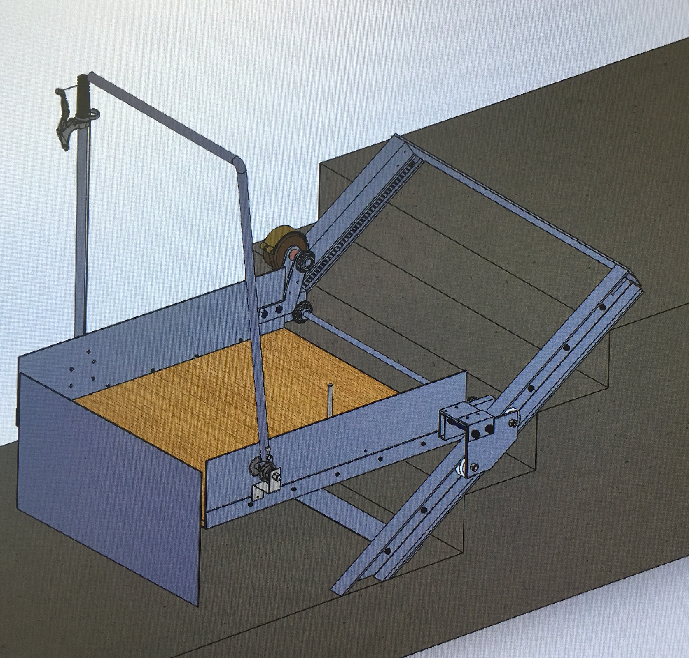
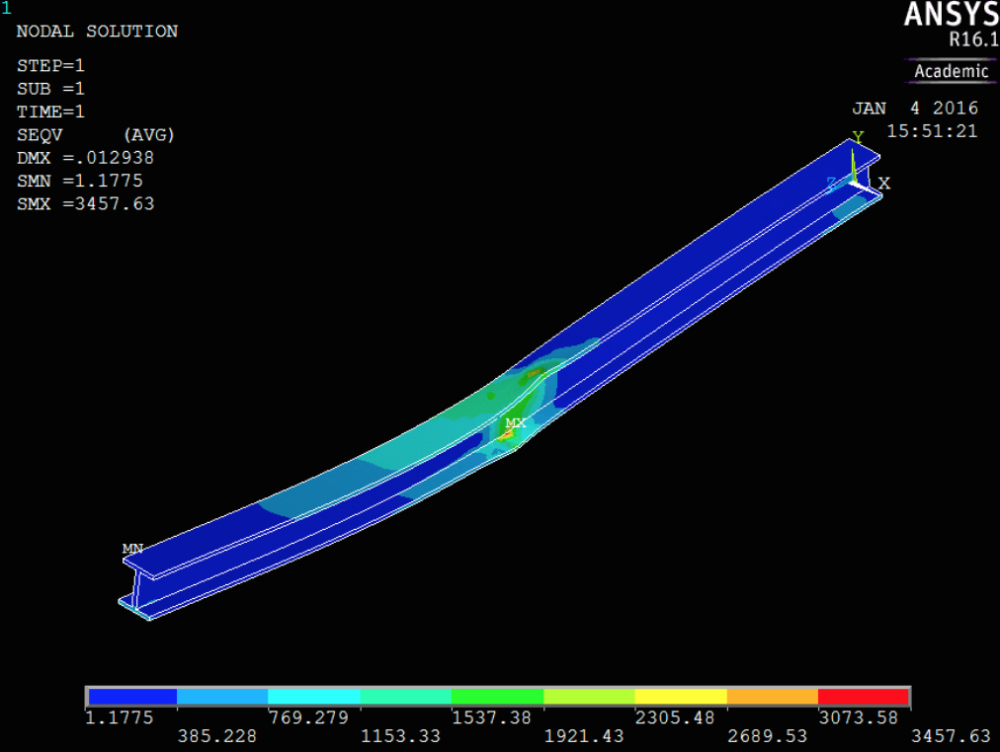
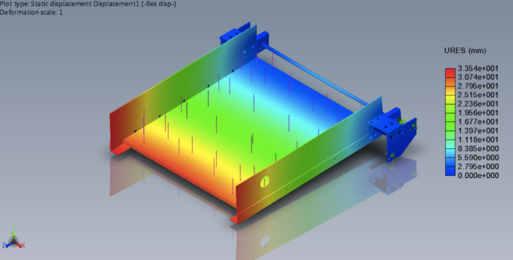

Mechanical Wheelchair Lift
Abstract
The objective of this project is to design a system that would allow a disabled person to traverse a set of stairs without aid from another individual. After completing preliminary research on all the ideas presently available, it was decided that the mechanism to be used would be a mechanical wheelchair lift. Picked due to its structural integrity, relative inexpensiveness, and straightforward design, the final system can be viewed in the image displayed here. A prototype was built and tested to yield deflection and ascension rate results. Platform deflection results exceeded standard requirements and Solidworks assembly models were used to investigate the unexpected behavior. It is hypothesized that imprecise machining led to disparities in Solidworks models and prototype assembly. Replacement of some Aluminum components with steel are proposed for future work. Although Ascension rate is satisfactory and performs according to ISO standards, additional disengaging and descent components require further testing and implementation. Considerations taken into account include: Structural analysis of components subjected to high stresses, biomechanic factors to offer optimum input from the user, and force input variations for added versatility. Concluding, the paper serves as an interim report on the manual lift endeavor with proposals for future work and research.
Modeling and FEA
The mechanism, shown here, incorporates extensive SolidWorks modeling of all the subassemblies required for the system to operate. Included are a manual brake, ramp, directional adjustment mechanism, and force lever. Although not all subassemblies were able to be prototyped, all were stress tested accordingly and thoroughly inspected in order to ensure proper operation. For a more in depth view please refer to the full report.
|  |  |
Prototyping
The final prototype, shown, was a great experience in designing machining, and testing. Although the proposed improvements could not be implemented and tested over the course of the project, our student team was able to complete a few iterations of full scale engineering design culminating in the working protoype that serves conclusively as a proof of concept.
 |